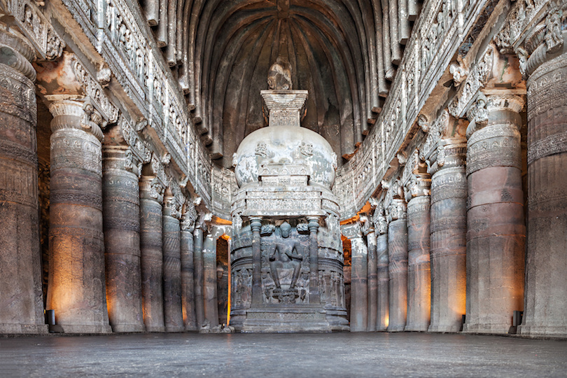
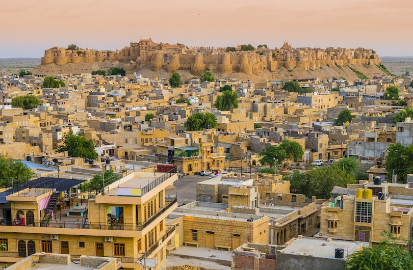
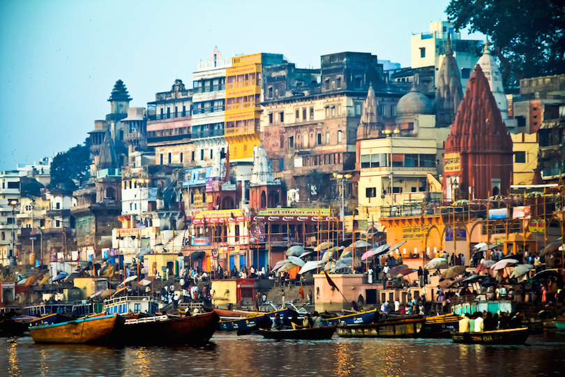
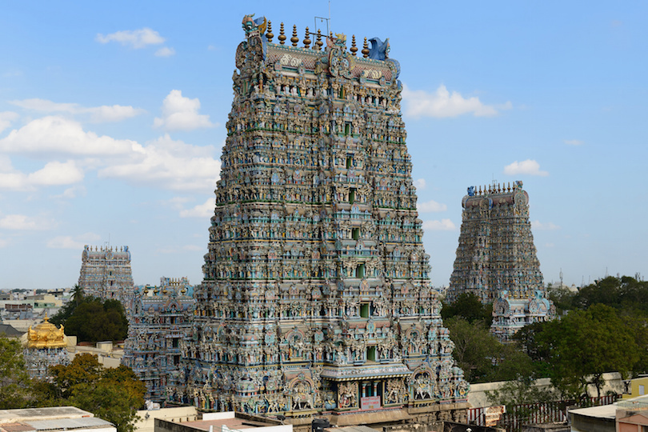

The Taj Mahal is the world's most famous testimony to the power of love. Named after Mumtaz Mahal, the favorite wife of Emperor Shah Jahan, this most beautiful of mausoleums was begun upon her death in 1631 and took 20,000 workmen until 1648 to complete.
The Taj Mahal is constructed of white marble decorated with delicate inlaid floral patterns and precious and semi-precious stones such as jade, lapis lazuli, diamonds, and mother of pearl.
Qutb Minar, Delhi
Qutub Minar is a minaret or a victory tower located in Qutub complex, a UNESCO World Heritage Site in Delhi's Mehrauli area.
Qutub Minar is the second tallest monument of Delhi with a height of 72.5 metres (238 ft). Its construction was started in 1192 by Qutb Ud-Din-Aibak, founder of Delhi Sultanate after he defeated the last Hindu Ruler of Delhi
Ajanta Caves, Aurangabad, Maharashtra

Ajanta Caves is home to 29 different caves, all of which showcase Buddhist artwork belonging to the period ranging from 200 B.C to 650 A.D. All paintings and sculptures in the caves were constructed painstakingly by Buddhist monks using only simple tools such as chisels and hammers. These paintings and sculptures portray a varied range of stories, starting from the Jataka Tales to intriguing accounts of ancient nymphs and princesses.
Darjeeling, West Bengal
Darjeeling is one of the most beautiful hill stations in Eastern part of India. Spread over a steep mountain ridge, nestled amidst acres of lush green tea plantations, Darjeeling stands at the height of 2,050 meters above sea level, thus boasting of cool climes all year round. This scenic hill station is the perfect getaway for a romantic honeymoon and is just around 700 kilometres away from Kolkata.
There is a reason the city is known as the 'Queen of the Himalayas'. The lush green slopes dotted with women plucking tea leaves is a sight as mesmerising as no other. There are over 86 tea estates in Darjeeling that are responsible for producing the worldwide famous 'Darjeeling Tea'. Have a cup of locally brewed chai at the tea estate, or get down amidst the plantations to pluck a few tea leaves yourself, you are free to take your pick!
Dharamsala, Himachal Pradesh
Dharamshala is the district headquarters of Kangra district of Himachal Pradesh, India. Kangra District was part of the British province of Punjab. It is the abode of His Holiness the 14th Dalai Lama.
Dharamshala is blessed with the same beauty as other parts of the state, but what sets it apart is it's strong Tibetan character. There are tourist spots in plenty, but mostly, Dharamsala is about unwinding and enjoying the serenity that is found here in abundance.
Harmandir Sahab, Amritsar, Panjab
The Golden Temple, also known as Harmandir Sahib, meaning "abode of God" or Darbār Sahib, meaning "exalted court", is a gurdwara located in the city of Amritsar, Punjab, India. It is the preeminent spiritual site of Sikhism.
The gurdwara is built around a man-made pool (sarovar) that was completed by the fourth Sikh Guru, Guru Ram Das in 1577. The Golden Temple is spiritually the most significant shrine in Sikhism. The Golden Temple is an open house of worship for all people, from all walks of life and faith. The Gurudwara has a langar – a free Sikh community run kitchen that serves a simple vegetarian meal to all visitors without discrimination. Over 100,000 people visit the holy shrine daily for worship.
Jaisalmer

Jaisalmer, nicknamed "The Golden city", is a city in the Indian state of Rajasthan, located 575 kilometres (357 mi) west of the state capital Jaipur. The town stands on a ridge of yellowish sandstone and is crowned by the ancient Jaisalmer Fort. This fort contains a royal palace and several ornate Jain temples. Many of the houses and temples of both the fort and of the town below are built of finely sculptured sandstone.
The town lies in the heart of the Thar Desert (the Great Indian Desert) and has a population, including the residents of the fort, of about 78,000. It is the administrative headquarters of Jaisalmer District. Jaisalmer was once the capital of Jaisalmer State.
Backwaters, Kerala
The Kerala backwaters are a network of brackish lagoons and lakes lying parallel to the Arabian Sea coast (known as the Malabar Coast) of Kerala state in southern India, as well as interconnected canals, rivers, and inlets, a labyrinthine system formed by more than 900 kilometres (560 mi) of waterways, and sometimes compared to American bayous.
The network includes five large lakes linked by canals, both man made and natural, fed by 38 rivers, and extending virtually half the length of Kerala state. The backwaters were formed by the action of waves and shore currents creating low barrier islands across the mouths of the many rivers flowing down from the Western Ghats range. In the midst of this landscape there are a number of towns and cities, which serve as the starting and end points of backwater cruises.
Mysore Palace, Mysore, Karnataka
The Mysore Palace is a historical palace and the royal residence(house) at Mysore in Karnataka. It is the official residence of the Wadiyar dynasty and the seat of the Kingdom of Mysore. The palace is in the centre of Mysore, and faces the Chamundi Hills eastward. Mysore is commonly described as the 'City of Palaces', and there are seven palaces including this one; however, 'Mysore Palace' refers specifically to this one within the Old fort.
The land on which the palace now stands was originally known as puragiri (literally, citadel), and is now known as the Old Fort. Yaduraya built the first palace inside the Old Fort in the 14th century, which was demolished and constructed multiple times. The current structure was constructed between 1897 and 1912, after the Old Palace was burnt ablaze.
The Holy City of Varanasi

The holy city of Varanasi is a major pilgrimage center for Hindus. Dating back to the 8th century BC, Varanasi is one of the oldest still inhabited cities in the world.
Varanasi boasts more than 100 ghats, the largest being Dasashvamedh Ghat and Assi Ghat. Also worth seeing is Banaras Hindu University, established in 1917 and noted for its massive library with more than a million books, and the superb Bharat Kala Bhavan museum featuring fine collections of miniature paintings, sculptures, palm-leaf manuscripts, and local history exhibits.
Meenakshi Amman Temple, Madurai, Tamil Nadu

Arulmigu Meenakshi Sundareshwarar Temple is a historic Hindu temple located on the southern bank of the Vaigai River in the temple city of Madurai, Tamil Nadu, India. It is dedicated to Thirukamakottam udaya aaludaiya nachiyar (Meenakshi), a form of Parvati, and her consort, Sundareshwar, a form of Shiva.
The temple is at the center of the ancient temple city of Madurai mentioned in the Tamil Sangam literature, with the goddess temple mentioned in 6th century CE texts. This temple is one of the Paadal Petra Sthalam. The Paadal Petra sthalam are 275 temples of lord Shiva that are revered in the verses of Tamil Saiva Nayanars of 6th-9th century CE.
Havelock Islands, Andaman and Nicobar Islands
Havelock Island, officially Swaraj Island, is one of the largest islands in Ritchie's Archipelago, to the east of Great Andaman within the Andaman Islands. It belongs to the South Andaman administrative district, part of the Indian union territory of Andaman and Nicobar Islands. The island is 41 km (25 mi) northeast of the capital city, Port Blair.